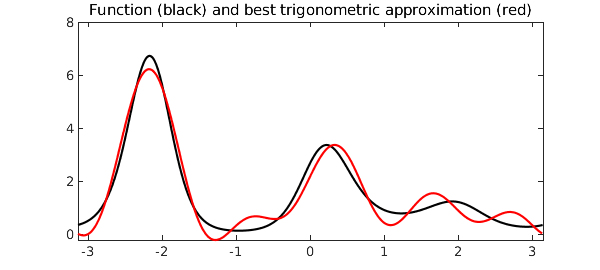
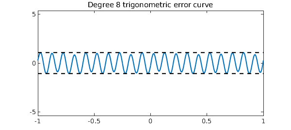
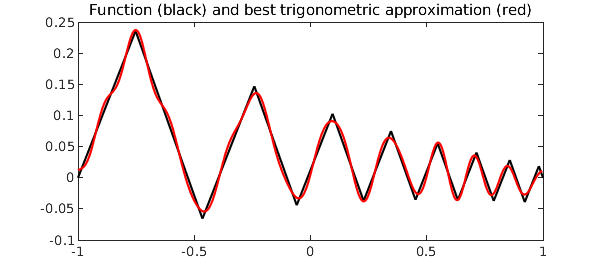
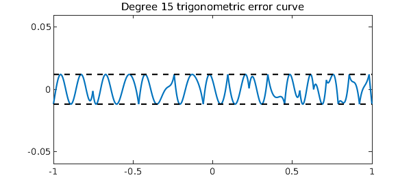
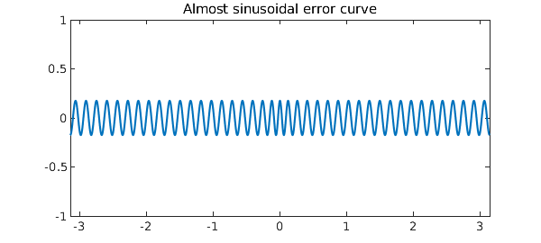

Chebfun's $\verb|trigremez|$ command can be used to find best (i.e. infinity-norm or minimax) trigonometric polynomial approximations of a real-valued continuous function on a periodic interval. For example, here is a periodic function on $[-\pi, \pi]$ and its best approximation by a trigonometric polynomial of degree $5$:
f = chebfun(@(x) exp(sin(2*x)+cos(3*x)), [-pi, pi], 'trig');
[p,err] = trigremez(f,5);
LW = 'linewidth'; FS = 'fontsize'; fs = 14;
plot(f,'k',p,'r',LW,1.6)
title('Function (black) and best trigonometric approximation (red)',FS,fs)

The error equioscillates, and the number of equioscillating extreme points is at least one more than the dimension of the approximation space. In the present case of a degree $5$ trigonometric approximation, the dimension of the approximation space is $11$, and hence the error curve must have at least 12 points of equioscillation:
plot(f-p,LW,1.6), hold on
plot([-pi pi], err*[1 1],'--k',LW,1)
plot([-pi pi],-err*[1 1],'--k',LW,1)
ylim(5*err*[-1, 1]), hold off
title('Degree 5 trigonometric error curve',FS,fs)
The $\verb|trigremez|$ command works for any chebfun, even a chebfun that is constructed without the trig flag, as long as it is continuous in the interior of the domain and takes the same value at both endpoints. Here is an example:
fh = @(x) 10*abs(x) + sin(20*pi*x) + 10*exp(-50*(x-.1).^2); f = chebfun(fh, 'splitting', 'on' );
[p, err] = trigremez(f, 8);
plot(f,'k',p,'r',LW,1.6)
title('Function (black) and best trigonometric approximation (red)',FS,fs)
And here is a plot of the error curve:
plot(f-p,LW,1.6), hold on
plot([-pi pi], err*[1 1],'--k',LW,1)
plot([-pi pi],-err*[1 1],'--k',LW,1)
ylim(5*err*[-1 1]), hold off
title('Degree 8 trigonometric error curve',FS,fs)

Here is another example where we first define a zig-zag function, which is aperiodic, but then make it periodic by subtracting off an appropriate linear term:
x = chebfun('x');
g = cumsum(sign(sin(20*exp(x))));
m = (g(1) - g(-1))/2;
y = m*(x - 1) + g(1);
f = g - y;
[p, err] = trigremez(f, 15);
plot(f,'k',p,'r',LW,1.6)
title('Function (black) and best trigonometric approximation (red)',FS,fs)

Again, the error plot equioscillates beautifully:
plot(f-p,LW,1.6), hold on
plot([-1 1], err*[1 1],'--k',LW,1)
plot([-1 1],-err*[1 1],'--k',LW,1)
ylim(5*err*[-1 1]), hold off
title('Degree 15 trigonometric error curve',FS,fs)

Experienced best approximators are used to seeing error curves that look approximately like Chebyshev polynomials, and indeed, there are theorems to the effect that for functions satisfying appropriate smoothness conditions, the best polynomial approximation error curves approach Chebyshev polynomials as the degree approaches infinity. In trigonometric rather than algebraic best approximation, however, the error curves tend to look like sine waves, not Chebyshev polynomials. To the experienced eye, this can be quite a surprise. The following example illustrates this:
f = chebfun('1./(1.01-cos(x))',[-pi,pi],'trig');
plot(f-trigremez(f,40)), ylim([-1 1])
title('Almost sinusoidal error curve', FS, fs)

The flavor of $\verb|trigremez|$ and the periodic Remez algorithm that it utilizes could not be more classical. Nevertheless, we are unaware of any previous computations of general periodic best approximations. Electrical engineers compute approximations all the time that appear to be periodic---the Parks-McClellan algorithm---but because of a symmetry, these computations are carried out using the ordinary polynomial Remez algorithm.
References
- M. Javed and L. N. Trefethen, The Remez algorithm for trigonometric approximation of periodic functions, submitted, 2015.